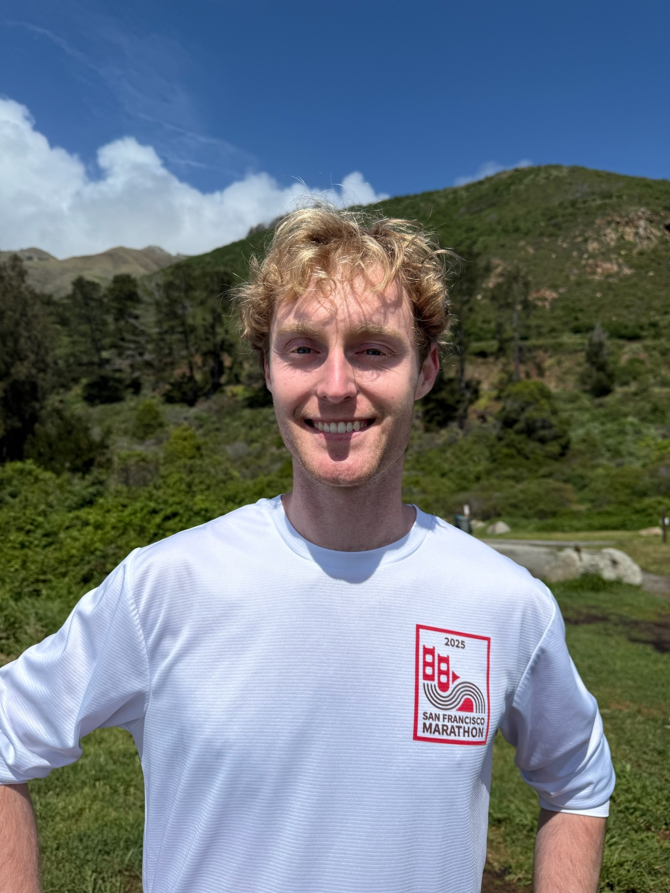

Ethan Reid
Founding Research Scientist, Moondream
San Francisco
I lead post-training and am a core contributor to pre-training at Moondream, backed by Felicus, M12, and Ascend. Before that, I worked in quantitative NGL trading, developing an optimizer for the ever-changing traveling salesman problem.
At Cal Poly SLO, I studied Quantitative Economics. Finishing early, I had the privilege to focus on mathematics and optimization. Outside of the classroom, I competed on the Debate and Cycling teams.
My goal is to solve the hard problems, the grand-prize ones. Intelligence, nature, the laws beneath both. The work that, done right, shifts what the world can be.
Watch
-
2026
Guest on “Deep Learning with Yacine”
An in-depth look at the principles behind our state-of-the-art segmentation model, and the architectural choices that got us there.
↗ -
2026
Speaker at Stanford's Frontier Research Club
Presentation and Q&A with Bay Area researchers, students, and investors.
↗ -
2017
SXSW: Seed Documentary Apple TV
HPE's 2017 documentary follows other founders and me through the startup process. Premiered at SXSW. Available on Apple TV.
↗
Works
-
2026
Moondream Segmentation Model arXiv preprint
State-of-the-art referring segmentation model. A two-stage process: the model autoregressively generates a vector path, then refines the rasterization. Outperforms SAM3, Gemini 2.5 Pro, and Kimi SimpleSeg.
↗ -
2026
Lens
Distributed API for supervised and RL training of Moondream.
↗ -
2025
RefCOCO-M Benchmark
A cleaned version of the RefCOCO (UNC) validation split. Replaces the original instance masks with pixel-accurate masks and removes harmful samples, giving referring image segmentation a reliable benchmark to compete on.
↗ -
2025
Moondream 3 Model
Co-developed a 2A9B MoE VLM that exceeds GPT-5 and Claude 4 on perception and grounding tasks.
↗ -
2024
Moondream 2 Model 25M+ HF downloads
One of the first and most popular small VLMs. Over 30M downloads on Hugging Face.
↗ -
2024
Moondream 0.5B Model
The world's smallest VLM at the time of release. Trained through iterative pruning.
↗